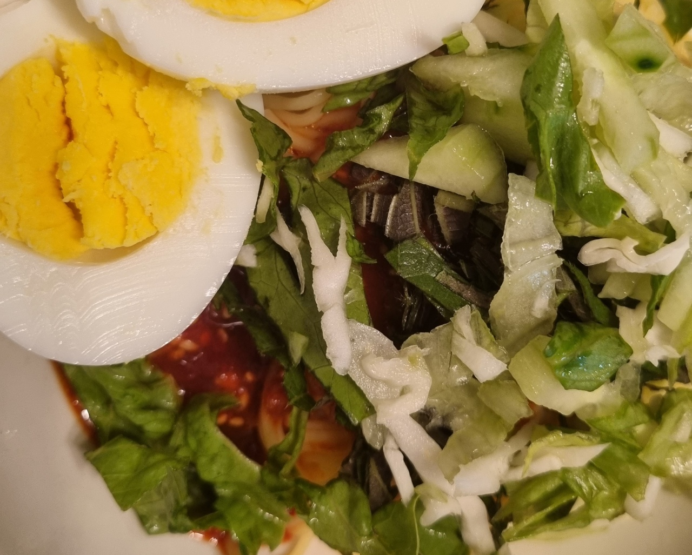

비빔칼국수

- 재료
칼국수 면 4인분, 계란 4개, 상추 또는 깻잎, 고추장 3T, 물엿 3T, 고춧가루 1.5T,
식초 3T, 참기름 2T, 설탕 2T, 참깨 톡톡
- 조리순서
- 고추장 3T, 물엿 3T, 고춧가루 1.5T, 식초 3T, 참기름 2T, 설탕 2T를 섞어 양념을 만듭니다.
상추 또는 깻잎을 씻어서 취향껏 썰어둡니다.
- 냄비에 물을 넣고 소금을 약간 뿌려서 15분간 계란을 삶습니다.
익은 계란은 찬물에 넣어 식힌 후 껍질을 까서 반으로 잘라둡니다.
- 칼국수 면을 한번 헹궈서 준비합니다.
냄비에 물을 끓여서 소금을 약간 넣고 5분간 면을 삶아줍니다.
면을 찬물에 여러번 씻은 후 체에 받쳐 물기를 제거합니다.
- 그릇에 면을 담고 양념장을 얹은 후, 야채와 계란을 올려서 참깨를 톡톡 뿌려줍니다.